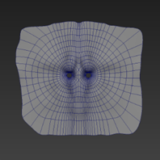
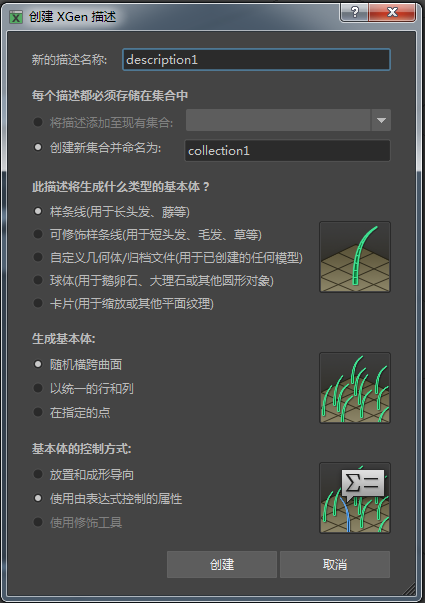
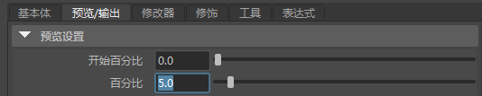
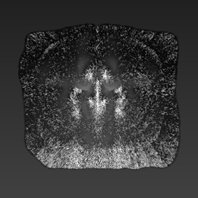
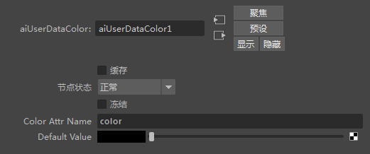
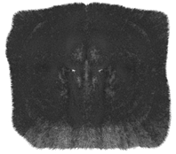
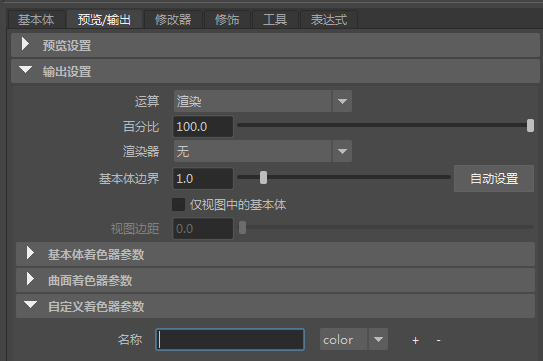
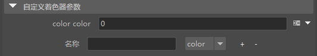
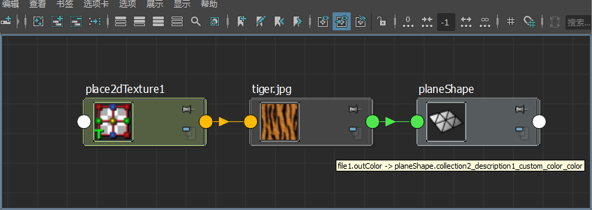

为样条线指定颜色
本教程介绍如何结合使用用户数据节点和纹理贴图，以将颜色应用于 XGen 样条线。我们将使用一个简单的多边形网格作为 XGen 描述的基础。
要下载示例场景文件，请单击此处。
- 首先，创建一个将用于指定 XGen 描述的多边形网格（例如平面）。

- 选择该多边形平面，然后转到“生成 > 创建描述”(Generate > Create Description)。此操作将打开下面的“创建 XGen 描述”(Create XGen Description)。
- 选择“样条线(用于长发、藤蔓等)”(Splines (use for long hair, vines, etc))。保留其他默认设置不变，然后单击“创建”(Create)。

- 建议先降低“预览/输出”(Preview/Output)选项卡中的“百分比”(Percent)值，然后再继续操作。如果“百分比”(Percent)的值过高，您可能会发现计算机会因生成大量的基本体而停止运行。

- 将“密度”(Density)增加到 30 左右。

样条线的“密度”(Density)设置为 30
- 为新的 XGen 集合指定一个 standard_hair 着色器。
- 创建 Ai 用户数据颜色节点，并将其连接到 standard_hair 着色器的 base_color 属性。
- 在 Ai 用户数据颜色节点的“颜色属性名称”(Color Attr Name)中键入 color。我们将在 XGen 描述中使用相同的“Color”名称。

将名称“color”添加到 Ai 用户数据颜色节点中的“颜色属性名称”(Color Attr Name)
MtoA 不会对 Ai 用户数据颜色节点进行 Gamma 校正。因此，您需要在 Ai 用户数据颜色节点与标准头发着色器的“尖端颜色”(Tip Color)属性之间添加 *Maya Gamma 校正*节点。
渲染场景。样条线是黑色的，因为 Ai 用户数据颜色的“默认值”(Default Value)为黑色。我们需要使用 XGen 中的“自定义着色器参数”(Custom Shader Parameters)将其连接到 XGen 描述。

样条线使用 Ai 用户数据颜色节点的默认颜色（黑色）
自定义着色器参数(Custom Shader Parameters)
- 单击 XGen 中的“预览/输出”(Priview/Output)选项卡，并打开“输出设置”(Output Settings)。您应该会在下方看到“自定义着色器参数”(Custom Shader Parameters)。我们将在这里添加表达式。

自定义着色器参数(Custom Shader Parameters)
- 在“名称”(Name)文本字段中，键入用于 Ai 用户数据颜色节点的“颜色属性名称”(Color Attr Name)的相同名称。在本例中，我们使用单词“Color”。单击“浮点”(float)并将其更改为“颜色”(Color)，因为这是我们想要更改的属性。

“自定义着色器参数”(Custom Shader Parameters)设置为“颜色”(Color)
- 单击颜色文本字段右侧的向下箭头 。选择“创建贴图...”(Create Map...)（请务必注意，仅当平面指定有 Maya 着色器时，该选项才有效）。将“贴图分辨率”(Map Resolution)增加到 200 左右。

- 这时应该会在“Hypershade”和“节点编辑器”(Node Editor)窗口中看到文件纹理已连接到几何体。选择该文件纹理，然后打开要用于驱动球体基本体的颜色的纹理贴图。

更新文件纹理后，记得选择 磁盘图标。否则，XGen 不会将 Ptex 贴图更新到磁盘，渲染将不会发生变化。
- 渲染场景。现在，您的样条线应该与文件纹理贴图的颜色相同。操作完成！
感谢 Pedro Fernando Gómez 在 XGen 方面提供的帮助。